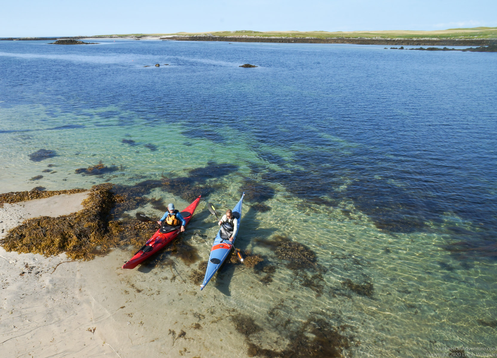
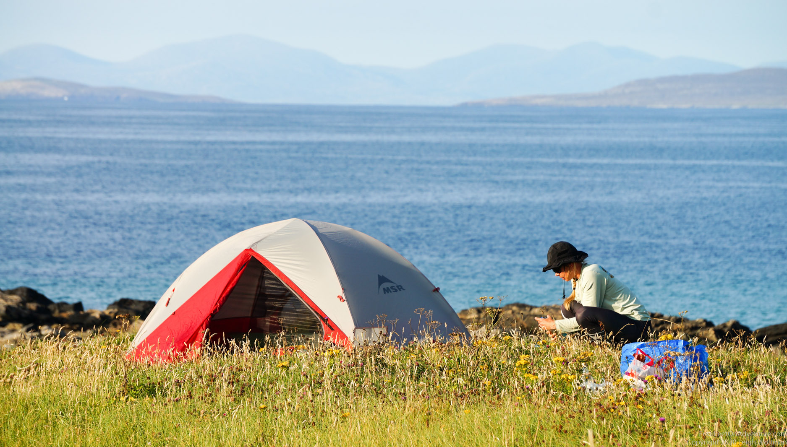
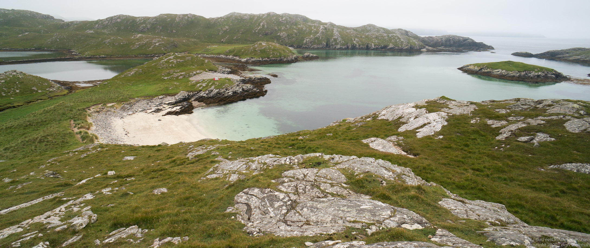
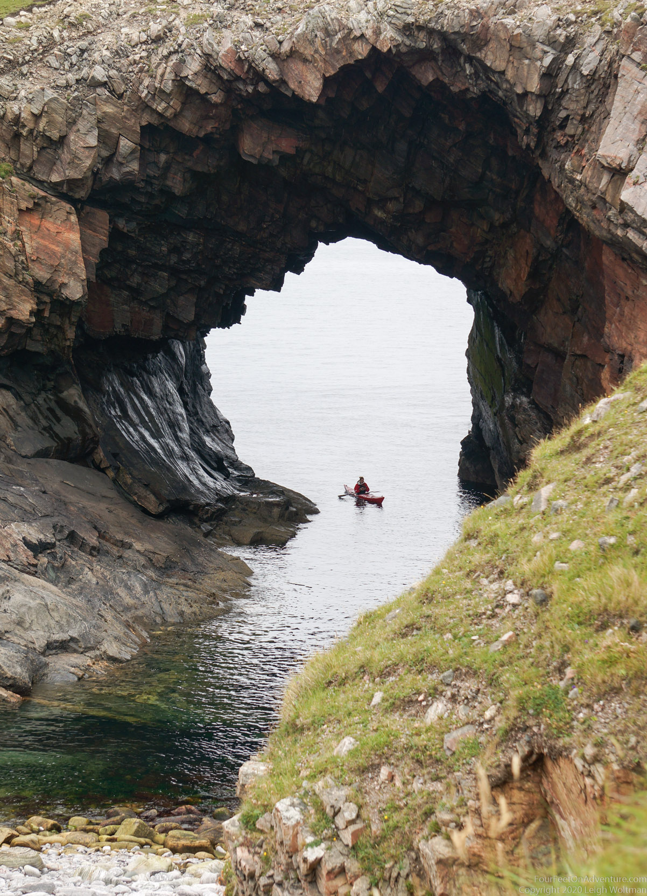
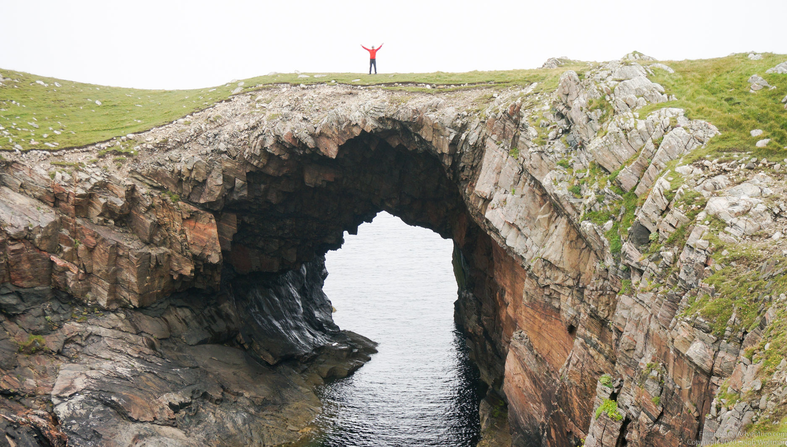
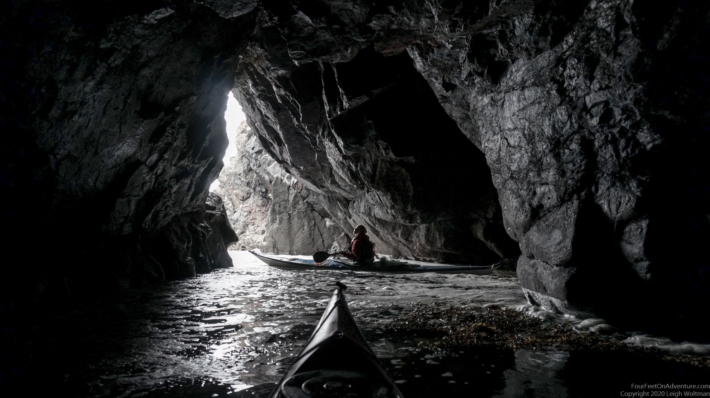
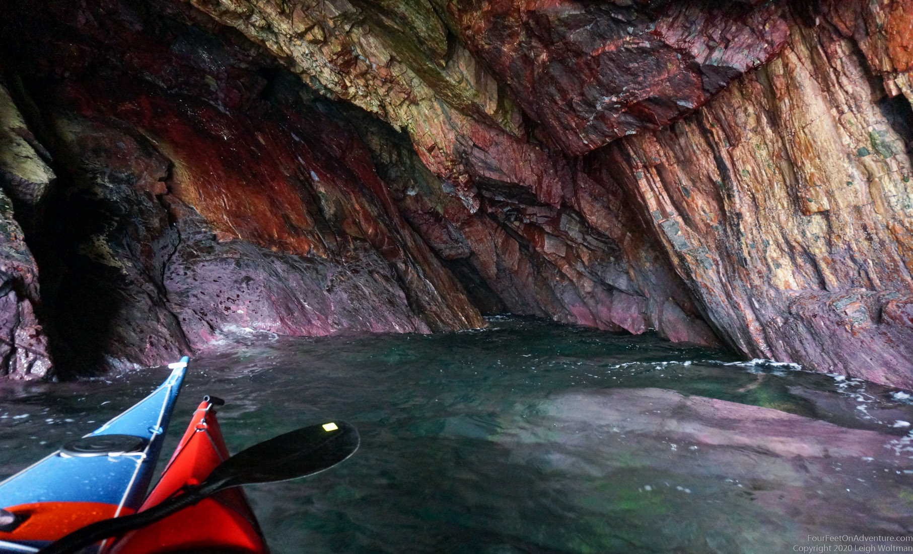

After our adventures in the southern western isles, we drove North, through Benbecula to North Uist, where we were heading to the island Vallay, which is known for being the smallest Scottish island to have an area greater than 1 square mile. I know, quite the bucket list destination!

This uninhabited island still had some agriculture going on, the farmer can access the island over the sand to the South of the island at low tide. When we paddled to the north of the island we had the beaches all to ourselves again. Another amazing night where we could look at the sunset straight from the tent. Not too many midgets as well, even though there was barely any wind. And we couldn’t resist our evening and morning swims. Is the ocean getting warmer, or are we getting used to the cold? It seems almost comfortable now. Harris, our next island, can already be seen behind us.

The next morning, we paddled back to the shore. We were due for a few drops of rain, our first since arriving at the Western Isles, and luckily it coincided with a drive to the ferry, and a ferry crossing into Haris. Due to COVID-19 restrictions, we had to stay in our car on this ferry ride, so we couldn’t have enjoyed the views into Leverburgh anyway. We did however, had a quick look at a bronch just before entering the ferry. I find these iron age remains fascinating, though really, often all that can be seen is a pile of rocks. But my imagination never fails to picture what it would have been like to live there back in the days.
Leverburgh, the village where the ferry from the South comes in, thanks its name to William Lever, the 1st Viscount Leverhulme, who wanted to turn the town into a massive fishing port. He had some success with herring, but died and nobody took on his project. To us, it’s mainly known for its excellent fish and chips food truck parked near the ferry. We drove up through Haris onto the beautiful hills on our way to further adventures. These were to be held in Pabaigh Mor, an island in the West corner of Lewis, but somewhat on the border of Haris and Lewis. Although Haris and Lewis are different names, they are the same island, and therefore their boundary is a bit confusing. Lewis is in the North and is somewhat flat, Haris is in the South and is not flat.
Next destination: Pabaigh Mor. This is where Annette celebrated her birthday. We found an amazing lagune in the middle of two islands, Pabaigh Mor and Pabaigh Beag. White beaches, blue and flat water. Even when a massive swell is coming in from the Atlantic, you’re safe here. Just might not be able to leave. We brought enough food to last a couple of days if we had to, but the wind never turned up as much as the worst forecast expected, and that was something we thought we could handle. But, better safe than sorry (or hungry)!
If you look very good on this picture, you'll see our tent.

We stayed here for 2 nights, exploring the islands around, the sea arches, wildlife, and climbed to the highest point of the island. Such an amazing place. I could have stayed there for weeks.


Going back was definitely not a punishment, but a highlight. We hadn’t had a good look at the sea caves on our way to the lagoon, but they were amazing! And so deep!

Lot's of wildlife as well, the trick was not to get splashed by any of the white stuff falling down from their behinds.
The following video demonstrates how deep these caves are. Not a place to be when claustrophobic, or in any swell.
One thing I couldn't get enough of where the colours in the caves. Aren't they amazing?!
